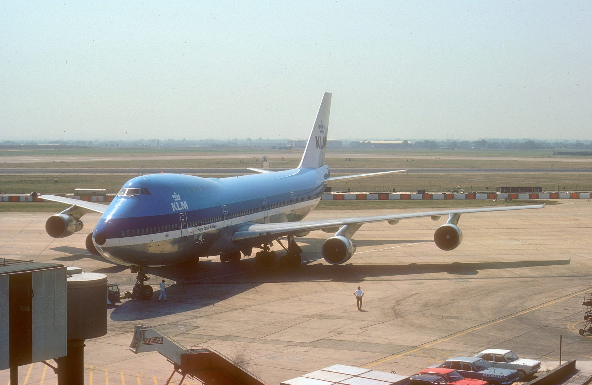
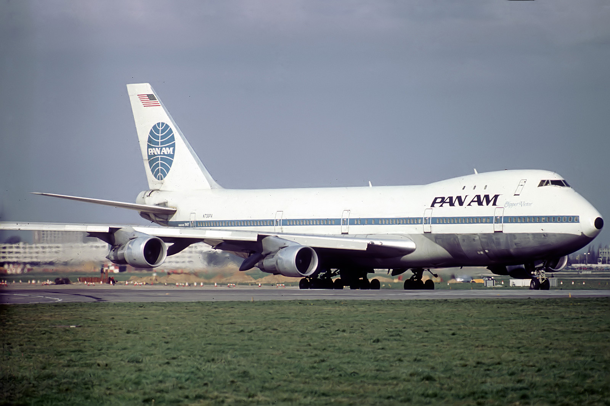
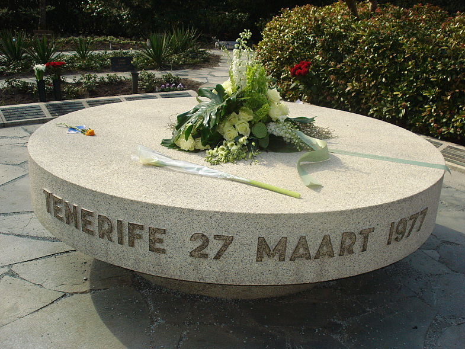

A bomb threat, a small regional airport never built for wide-body jets, and a wall of fog so thick that two Boeing 747s never saw each other until it was too late. On March 27, 1977, at Los Rodeos Airport on Tenerife, 583 people died without either aircraft ever leaving the ground. It remains the deadliest accident in aviation history.
Neither aircraft was ever supposed to be at Los Rodeos. Both were headed for Gran Canaria Airport, on the neighboring island, when a bomb changed everything.

At around 13:15 local time on March 27, 1977, a bomb planted at Gran Canaria Airport by a Canary Islands separatist group exploded in the terminal, injuring eight people. No one was killed by the blast itself, but it forced the airport's closure while police searched for a second device rumored to be planted nearby.
Every flight bound for Gran Canaria that afternoon, including a KLM Royal Dutch Airlines charter carrying Dutch holidaymakers and a Pan Am 747 continuing on from Los Angeles and New York, had nowhere to go but the nearest alternate: Los Rodeos Airport, a small regional field on the island of Tenerife, roughly 100 kilometers away.
KLM Flight 4805 was a Boeing 747-206B, registration PH-BUF, nicknamed “Rijn” (The Rhine). In command was Captain Jacob Veldhuyzen van Zanten, 50, KLM's chief flight instructor and one of the airline's most senior and publicly recognizable pilots, alongside First Officer Klaas Meurs, 42, and Flight Engineer Willem Schreuder, 48. On board were 234 passengers and 14 crew.
Pan Am Flight 1736 was a Boeing 747-121, registration N736PA, nicknamed “Clipper Victor,” the very first 747 to enter scheduled commercial service in 1970. Captain Victor Grubbs, 56, commanded the aircraft with First Officer Robert Bragg, 39, and Flight Engineer George Warns, 46, and a cabin carrying 380 passengers and 16 crew, most of them elderly Americans on a chartered Mediterranean cruise package.

Los Rodeos was never built to absorb a full afternoon of diverted wide-body jets. It had one runway and one taxiway running parallel to it. That was the entire airfield.
KLM 4805, Pan Am 1736, and several other diverted jets landed at Los Rodeos within a short span of each other. With the single taxiway already full, incoming aircraft had nowhere to park except along it, blocking it completely for anyone trying to use it as intended.
Captain van Zanten decided to take on a full load of fuel at Los Rodeos rather than at Gran Canaria, reasoning it would save time once the airport reopened. His first officer and flight engineer had both suggested refueling at their original destination instead. The refueling took roughly 35 minutes.
While KLM refueled, its parked 747 blocked the only path Pan Am's aircraft needed to reach the runway, with as little as 12 feet of clearance between the two jets. Pan Am's passengers stayed aboard the entire time; KLM had let its passengers off to wait in the terminal, adding further delay once boarding resumed.
With the parallel taxiway unusable, air traffic control had both aircraft taxi out and back down the runway itself, a normal but higher-workload procedure called backtaxiing, to reach the end where takeoffs began. It meant both jets would, briefly, be on the same runway, moving in opposite directions, at the same time.
Los Rodeos sits at over 2,000 feet of elevation, in terrain known for fast-moving cloud. As the afternoon wore on, that cloud rolled directly across the runway.
Visibility along the runway fluctuated as low cloud drifted through, measured at points around 500 meters and then, in patches, dropping to under 100 meters, roughly the length of a single Boeing 747. Pilots and controllers alike lost sight of aircraft they had been tracking visually only moments earlier.
Los Rodeos had no surface movement radar, the equipment that lets a control tower track exactly where aircraft are on the ground even when nobody can see them. In the fog, the controller working both flights had no way to visually confirm either aircraft's exact position on the runway, and neither pilot could see the other's.
By the time both 747s were taxiing toward the runway's far end, cloud was blowing down its length in bands, at times leaving each crew able to see barely past their own nose. Neither cockpit could see the other aircraft. Neither could see the runway ahead clearly enough to know, for certain, that it was empty.
What follows is reconstructed directly from both aircrafts' cockpit voice recorders, cross-referenced against the tower frequency, exactly as the official investigation timed it. All times are local (GMT).
KLM's first officer radios the tower: “The KLM four eight zero five is now ready for take-off and we are waiting for our ATC clearance.”
The tower reads out KLM's departure routing, the clearance for the flight path after takeoff. It is not, and was never intended as, permission to begin the takeoff roll itself.
Reading the route clearance back, the KLM first officer adds a final line: “We are now at take-off.” Captain van Zanten begins advancing the throttles as it's said. To the tower, the phrase was ambiguous. To the crew, in the moment, it read as a statement of fact.
The tower replies “OK”, a non-standard acknowledgment, then adds: “Stand by for take-off, I will call you.” Only fragments of this reach the KLM cockpit clearly; the rest is lost.
At almost the exact same moment, Pan Am transmits: “We're still taxiing down the runway, the Clipper one seven three six.” Both transmissions key the frequency simultaneously, producing a burst of interference on the KLM flight deck that overrides the more critical half of the tower's warning and all of Pan Am's.
Inside the KLM cockpit, the flight engineer asks, in Dutch: “Is hij er niet af dan?” (Is he not clear, then?) Captain van Zanten answers emphatically: “Oh, yes.” The aircraft continues its takeoff roll.
Pan Am's crew had been told to exit the runway at the third taxiway and report back once clear. In the fog, they missed it.
Pan Am was instructed to exit the runway at the third taxiway (C-3) and report it clear. Its crew, navigating in near-zero visibility, continued past the sharply angled, poorly marked exit toward the fourth. KLM began its takeoff roll from the opposite end of the same runway seconds later.
There he is! … Look at him! Goddamn, that son of a bitch is coming!
— Captain Victor Grubbs, Pan Am 1736, Cockpit Voice Recorder, 17:06:47Pan Am's crew spotted KLM's landing lights emerging from the fog, bearing directly down the runway toward them, at the last possible moment. First Officer Bragg pushed the throttles forward and Captain Grubbs threw the aircraft into as sharp a left turn off the runway as a fully loaded 747 could manage. It wasn't enough distance, and it wasn't enough time.
In the KLM cockpit, First Officer Meurs and Flight Engineer Schreuder saw Pan Am's silhouette at nearly the same instant. Captain van Zanten pulled back hard, trying to force the aircraft into the air early. Investigators later concluded KLM's nose gear had just lifted off, and its tail briefly struck the runway from the force of the rotation, when its underside struck the top of Pan Am's fuselage.
KLM's main landing gear and lower fuselage tore through the upper rear section of Pan Am's aircraft, directly through the first-class cabin and upper deck lounge, an area normally holding some of Pan Am's passengers, before the two aircraft separated. KLM's engines, still at full or near-full takeoff power, briefly carried it back into the air before it stalled, rolled, and slammed into the runway roughly 150 meters further along, sliding to a stop in flames.
Both cockpit voice recorders stop within a second of each other: KLM's at 17:06:49.7, Pan Am's at 17:06:50.
Both aircraft were carrying substantial fuel loads. What happened next took seconds for one aircraft, and just long enough for a handful of people to escape the other.
KLM's 747, carrying the full fuel load taken on during its 35-minute stop, exploded almost instantly on impact after cartwheeling back onto the runway. The fire was immediate and total. All 248 people aboard, 234 passengers and 14 crew, including Captain van Zanten, First Officer Meurs, and Flight Engineer Schreuder, were killed. There was no time for anyone aboard to attempt an escape.
Pan Am's fuselage, torn open along its upper structure but still largely intact along the left side, caught fire more slowly. For the people seated forward of the point of impact, that difference, measured in a small number of minutes, was the entire distance between survival and death.

Every one of the 61 people who survived was aboard Pan Am 1736, seated in or near the forward section of the aircraft, the part of the fuselage furthest from where KLM struck.
Purser, Pan Am Flight 1736
She survived. She kept flying.
Dorothy Kelly was working the forward first-class door when the collision struck. She was hit by flying debris and fell through a hole torn in the cabin floor into the cargo hold below. Despite a head wound and a broken arm she wouldn't discover until later, she climbed back up and began helping treat other survivors' burns before finally accepting treatment for her own injuries.
Survivors who could still move made their way to the intact left wing, the side of the aircraft furthest from where KLM had struck, climbing out through the torn fuselage and dropping or sliding down to the tarmac before the fire spread. First Officer Robert Bragg also survived, and spent much of the rest of his life speaking publicly about the accident and its lessons, until his death in 2017.
Rescue crews, working in thick fog and smoke, initially concentrated on KLM's wreckage, hundreds of meters away and burning far more visibly. Pan Am's survivors waited on the open tarmac, some for close to half an hour, before help reached them in force. Sixty-one people made it out. Three hundred and thirty-five aboard Pan Am did not.
Spain's Subsecretaria de Aviacion Civil, working with the Spanish Civil Aviation Accident and Incident Investigation Commission (CIAIAC), published its findings later in 1977, distributed internationally as ICAO Circular 153-AN/56. The direct cause was stated plainly. Everything that made it possible was not.
The Spanish investigation's central finding was unambiguous: Captain van Zanten began the takeoff roll without air traffic control clearance to do so, misreading a route clearance and a partially garbled “stand by” instruction as permission he never actually received.
KLM's transmission and Pan Am's warning that they were “still taxiing down the runway” keyed the same frequency within a second of each other, producing interference that erased the two pieces of information that, heard clearly, would very likely have stopped the takeoff.
“We are now at take-off” was not standard phraseology in 1977, and the tower's “OK” in response, rather than a required, unambiguous readback, left room for exactly the kind of misunderstanding that followed. Neither phrase would be considered acceptable radio communication in commercial aviation today.
Flight Engineer Schreuder's hesitant question about whether Pan Am was clear was met with a firm, immediate “Oh, yes” from his captain, and he didn't press further. Van Zanten was KLM's chief flight instructor, one of the most senior and experienced pilots at the airline; investigators found that his authority in the cockpit made his own crew less likely to challenge him, even when their instincts were telling them something was wrong.
The fundamental cause of the accident was that Captain van Zanten took off without clearance.
— Spanish Civil Aviation Accident and Incident Investigation Commission, Final Report, 1977Jacob van Zanten was so senior and so well known within KLM, his photograph had appeared in the airline's own advertising and in the in-flight magazine carried on the aircraft he was flying that day, that in the confusion immediately after the accident, KLM's head office in Amsterdam considered contacting him to help lead their response, before anyone realized he was the captain who had died.
Tenerife remains the deadliest accident in aviation history, and also one of the most consequential. Almost everything about how pilots and controllers talk to each other today traces back, directly or indirectly, to this runway.
ICAO standardized the phraseology used worldwide as a direct result of this accident. The word “takeoff” is now spoken only when an actual takeoff clearance is being given or canceled, never in a route clearance. Instructions to aircraft on a runway must now include the explicit phrase “hold position,” and clearances must be read back in full rather than acknowledged with a casual “OK” or “Roger.”
Tenerife became the founding case study for what the industry now calls Crew Resource Management: the principle, later vindicated over Sioux City by the crew of United 232, that any crew member, regardless of rank, must feel able to question a captain's decision, and that a captain must be trained to invite that challenge rather than discourage it. CRM training has been mandatory for airline pilots worldwide since 2006.
Los Rodeos had no way to track aircraft positions on its own runway and taxiways once visibility dropped. Spain installed ground radar at the airport, now Tenerife North–Ciudad de La Laguna Airport, in the years that followed, and surface movement radar is now standard equipment at major airports worldwide precisely because of what happened here.
A memorial stone at Westgaarde cemetery in Amsterdam commemorates the Dutch victims of KLM 4805. A separate memorial garden at Westminster Memorial Park in California honors many of Pan Am's passengers and crew. Both remain sites of quiet remembrance each March 27th.
Every fact in this case file was cross-referenced against the official government investigation and at least one independent secondary source. All links open in a new tab.
Spain's official investigation findings on the collision between KLM Flight 4805 and Pan Am Flight 1736, published as ICAO Circular 153-AN/56 and mirrored on a U.S. federal government domain.
The FAA's official case summary and safety-lessons page for this accident.
The NTSB's 1986 human-factors safety study, published in part to advance crew resource management practices using the lessons of Tenerife.
Retrospective news coverage of the accident, its victims, and its lasting impact on the industry.
Industry trade-press retrospective on the accident and the regulatory changes that followed.
Used as a secondary, cross-referencing source for names, timestamps and sequence of events, verified in turn against the sources above.
What people ask about the Tenerife disaster. Answers here match the case file above and the official record it is built on.
A KLM Boeing 747 began its takeoff roll on the runway at Los Rodeos while a Pan Am 747 was still taxiing along the same runway in thick fog. The Spanish investigation found the primary cause was the KLM captain taking off without clearance, compounded by ambiguous, non-standard radio phraseology, a simultaneous radio transmission that blocked a critical message, and visibility so poor that neither crew nor the tower could see the other aircraft.
583 people were killed, making it the deadliest accident in aviation history. All 248 people aboard the KLM aircraft died. Of the 396 aboard the Pan Am aircraft, 61 survived. Neither aircraft ever left the ground in controlled flight.
Neither was scheduled to be there. A bomb detonated at Gran Canaria Airport that morning and, with a warning of a possible second device, traffic was diverted to Los Rodeos on Tenerife, a small regional airport with a single runway and no ground radar. The airport became so congested with diverted wide-body aircraft that departing jets had to taxi along the active runway itself.
As the aircraft began moving the flight engineer questioned whether the Pan Am aircraft was clear of the runway. The captain's response, which appears on the cockpit voice recorder, was an emphatic assertion that it was. The KLM captain, Jacob van Zanten, was the airline's chief of flight training and one of its most senior and respected pilots, which is part of why the accident became a foundational case study in cockpit authority.
Tenerife led directly to standardised international radio phraseology, including the elimination of the ambiguous word 'takeoff' from anything other than an actual clearance, and mandatory readback of critical instructions. More broadly it drove the creation of modern crew resource management training, which exists so that a junior crew member can challenge a captain and be heard.